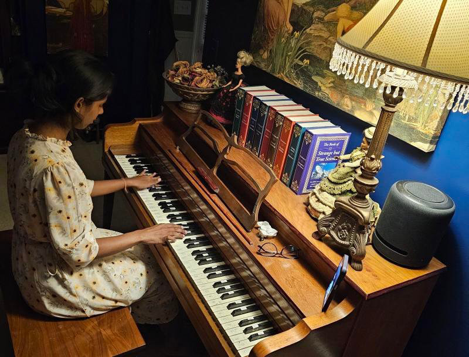

Music
Piano
I started learning piano at the age of nine and took lessons for almost four years. It was incredibly formative, teaching me the value of discipline and practice. I still play and try to learn new songs every now and then. Learning the piano also helped me understand the foundations of music which allowed me to translate that understanding into other instruments like the harmonium and flute.